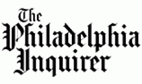

Press & News
April 24, 2014
The Mayor's Fund Kicks Off Spring into Change
On May 1st, 2014, the Mayor's Fund will kick off Spring Into Change Month on Twitter. All month long, we'll be sharing info and news about us and our great partners, with a focus on how these organizations are bringing positive changes to Philadelphia this Spring and beyond.Continue Reading »

April 24, 2014
A Mayor's Fund Program, Mural Arts Society, announced plans for a new mural
The Mayor’s Fund for Philadelphia contributed funds to help support the Mural Arts Society’s new mural projects citywide. Continue Reading »